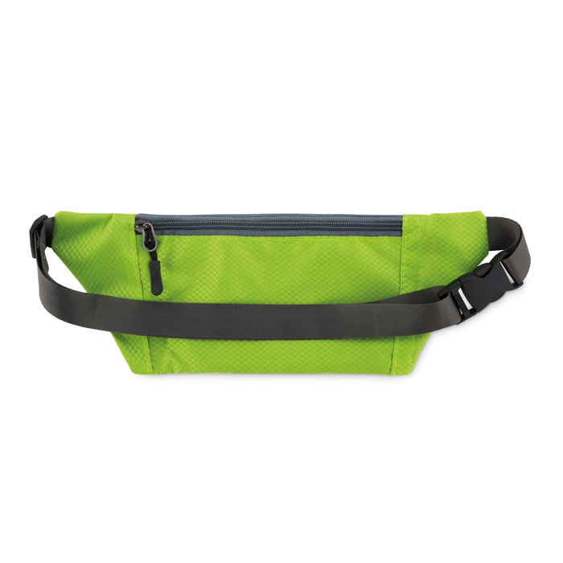
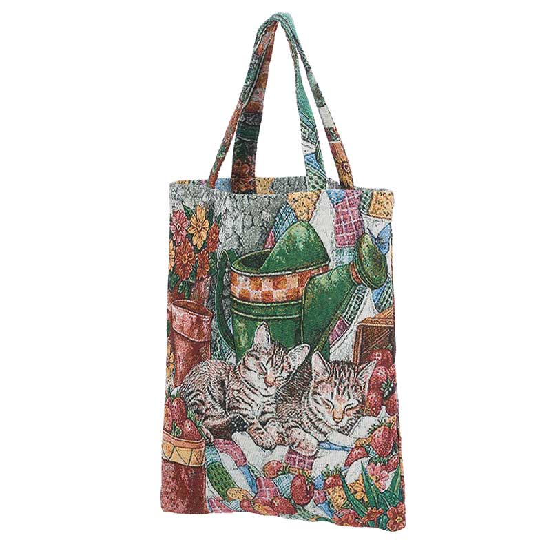
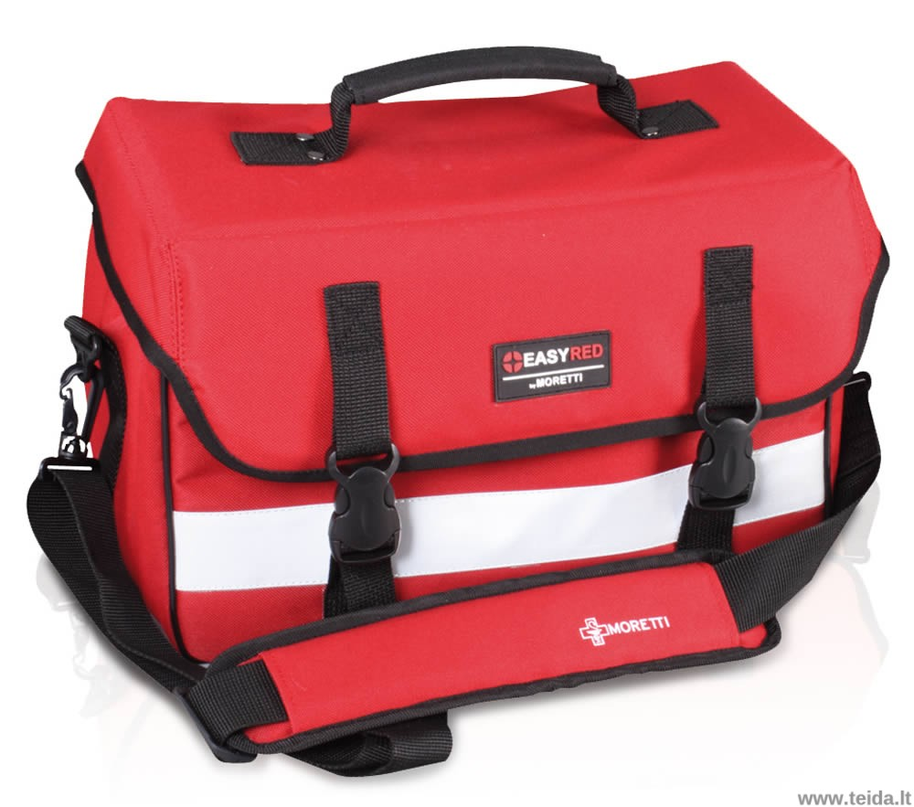
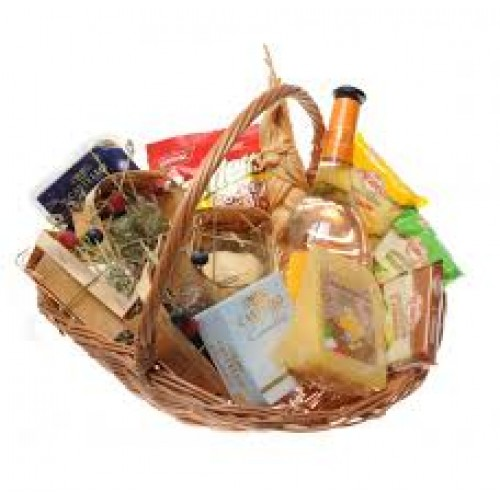
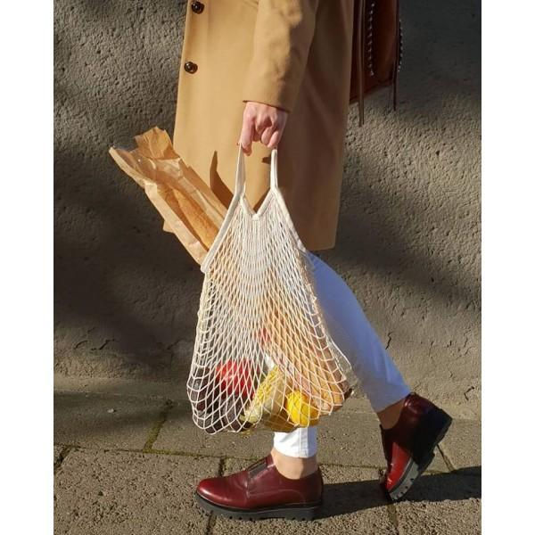
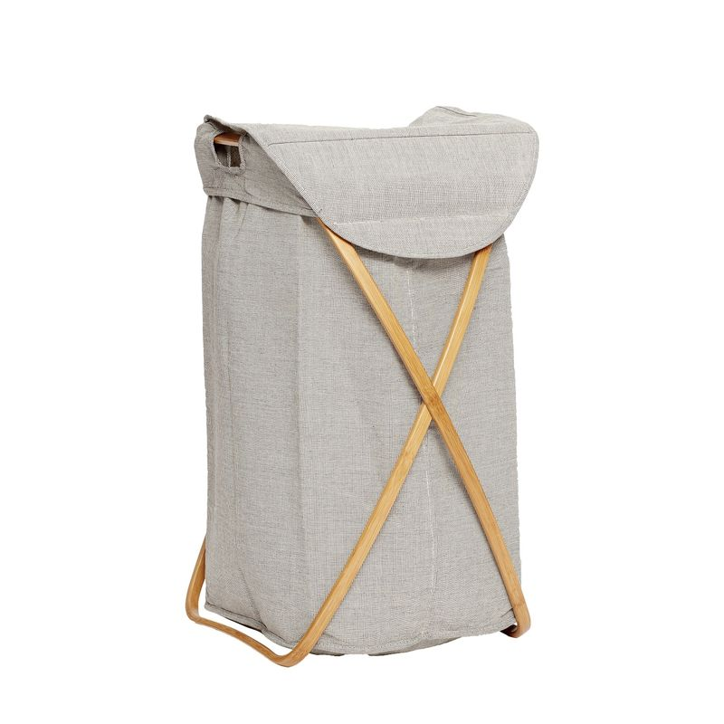
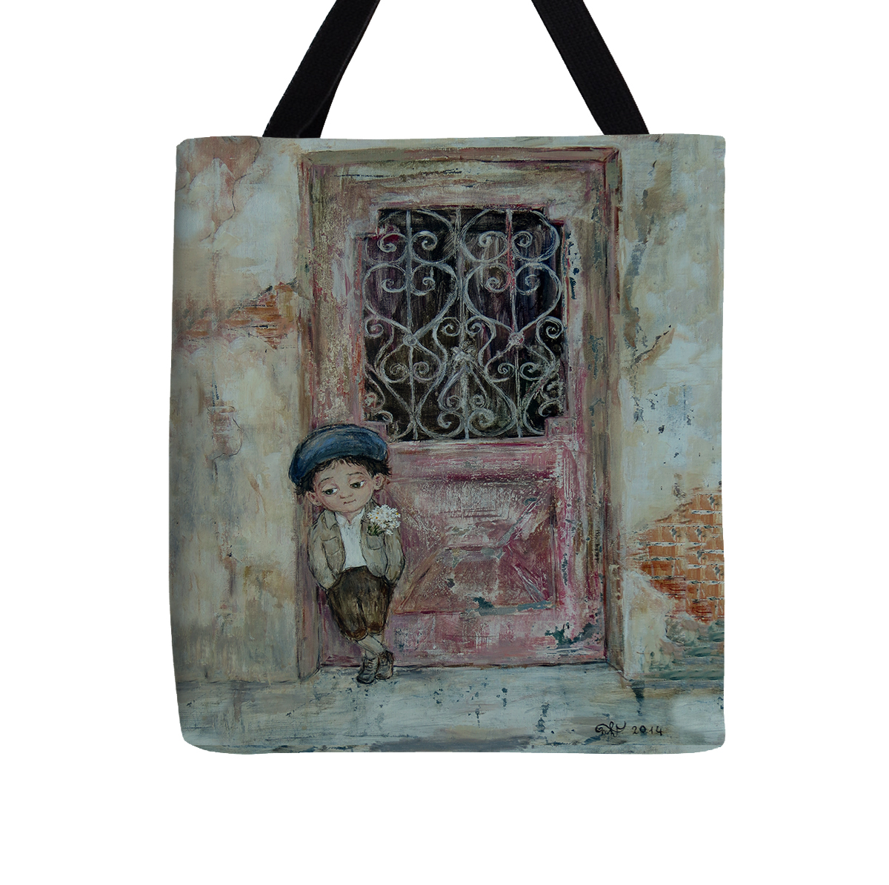
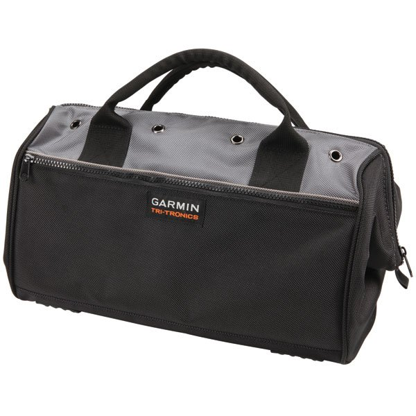
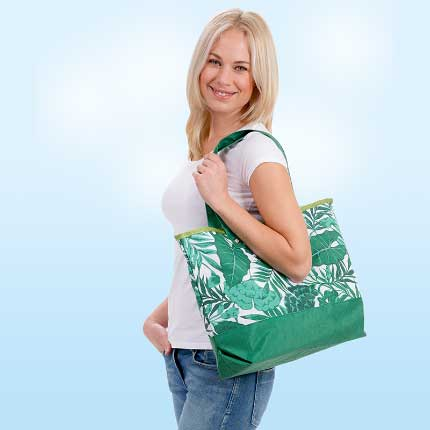
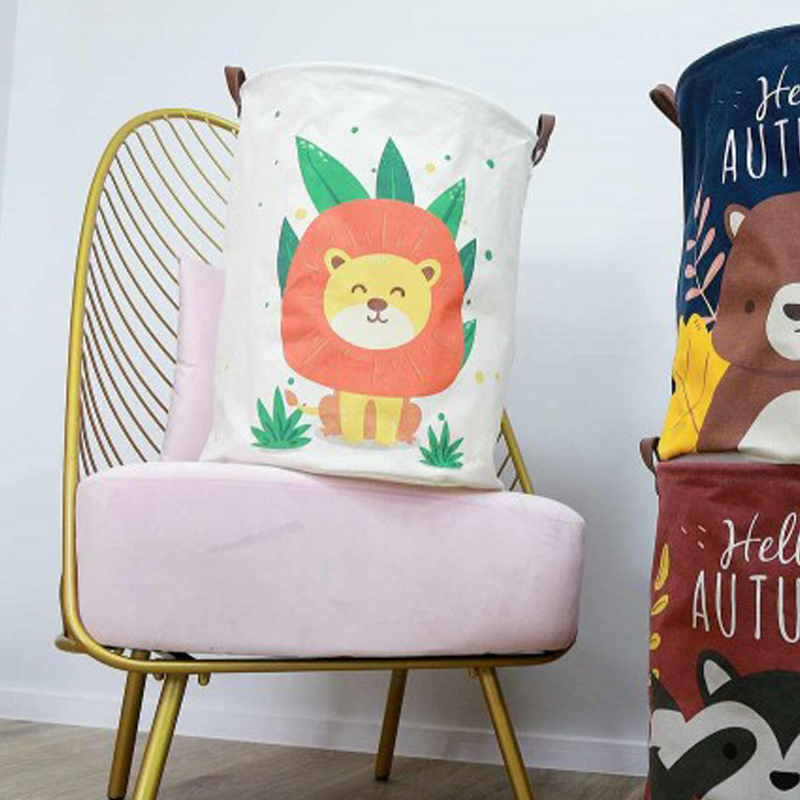

Photo gallery
2020.10.29 07:17



















- Kelioniniai krepšiai - lagaminaivisiems.lt
Stilingas ir praktiškas krepšys daiktams, su rankenomis. Baltas krepšys su aukso spalvos raštais. Ilgis: 50 cm. Plotis: 40 cm. Didelis krepšys įvairiems daiktams susidėti. Sukurkite išskirtinį interjerą! Visas prekes turime vietoje. GREITAS SIUNTIMAS (1 – 3 darbo dienos*) Siunčiame visoje Lietuvoje (Omniva paštomatais arba paštu) - Krepšys | JAHONTS
krepšys katei, krepšys kompiuteriui 17, krepšys kompiuteriui, krepšys dviraciui, krepšys kompiuteriui 15.6, krepšys malkoms, krepšys vežti gyvūnui dviračiu, krepšys su ratukais, krepšys nešiojamam kompiuteriui, krepšys skalbiniams - Didelis krepšys daiktams | juodalape.lt
Universalus krepšys gali būti nešiojamas ne tik išvažiuojant savaitgaliui toliau nuo namų, bet taip pat ji ypač tinka sportuojantiems asmenims, kuriems su savimi reikia nešiotis sportinę aprangą, avalynę, gertuvę bei kitus daiktus. Dar vienas krepšio privalumas – į jį puikiai telpa modernus nešiojamas kompiuteris, todėl jei ... - daržovių krepšelis, vaisių krepšys, derlius, padėkos ...
El. „Dabartinės lietuvių kalbos žodyne“, J. Pričinausko „Rusų–lietuvių kalbų prekių žodyne“ (Vilnius, 1996) teikiamas žodis krepšys.Jis vertinamas kaip pagrindinis (neutralusis) normos variantas (ypač prestižinėje bendrinėje kalboje): Automobilyje rastas krepšys.Dingo juodos spalvos odinis krepšys su daiktais. - Krepšiai, kuprinės nešiojamiems kompiuteriams
Krepšys malkoms internetu gera kaina: greitas pristatymas, platus asortimentas, kokybiškos prekės pigiau. Mūsų interneto svetainėje yra naudojami slapukai. Slapukai padeda užtikrinti tinkamą tinklapio veikimą bei jo tobulinimą, todėl būtinieji slapukai (techniniai, funkciniai bei analitiniai) yra įdiegiami automatiškai. - Krepšys - DRDtools.lt
Krepšys - tai puiki alternatyva, norint sutalpinti kuo daugiau daiktų. Skrendant, vienas pagrindinių kelioninio krepšio privalumų - Ryanair aviakompanijos lėktuvuose, jį galima naudoti kaip antrą rankinio bagažo vienetą. Pas mus rasite, 55x40x20, 40x20x25, 40x30x20, 85x39x35 matmenų patogių kelioninių krepšių, žaismingų ... - Kompiuterio krepsys, tase, kuprines iš Case Logic ir kt.
Įvairių modelių sportiniai krepšiai idealiai tiks susidėti daiktus į treniruotes ar net trumpas keliones. ir mažesniuose, ir didesniuose sportiniuose krepšiuose galėsite sutalpinti tai, ko jums labiausiai reikia. Pristatymas 1-3 d.d., 30 dienų gražinimo garantija. - Kelioniai krepšiai su ratukais - lagaminaivisiems.lt
Sportinis Krepšys Sportui, Kelionėms ir Laisvalaikui. Žymių Gamintojų. Virš 350 Krepšių. Stilingi ir Kokybiški. Nemokamai Atsiimk 1 iš 15 Parduotuvių - Krepšys - vertimai, sinonimai, gramatika, statistika ...
drdtools.lt - Prekių krepšys. 1 Krepšys: 2 Pirkėjo duomenys: 3 Pristatymo būdas: 4 Mokėjimo būdas: 5 Užsakymo patvirtinimas: Jūsų užsakymo suma: 0 € ... - Krepšys - VLKK
Krepšys; Pristatymas; Apmokėti Ačiū! Pristatymas su kurjeriu Omniva Pristatymo kaina : Suma viso Dovanų dežutės mūsų gaminiams JB47009BL10R. 3.56 EUR JB47009BL10BL. 3.56 EUR ...